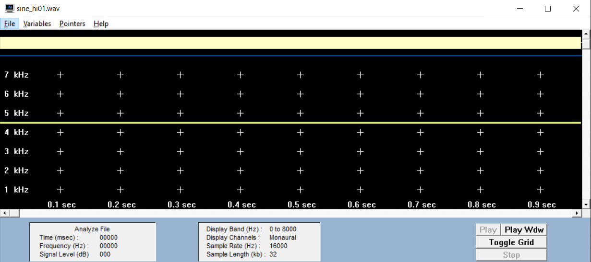
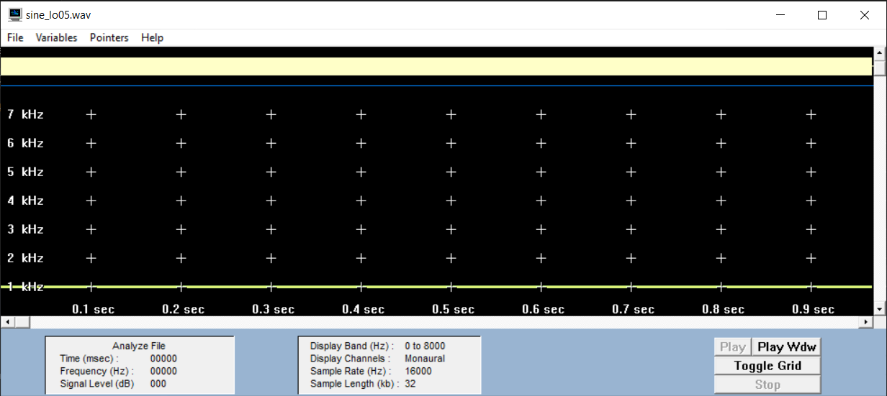
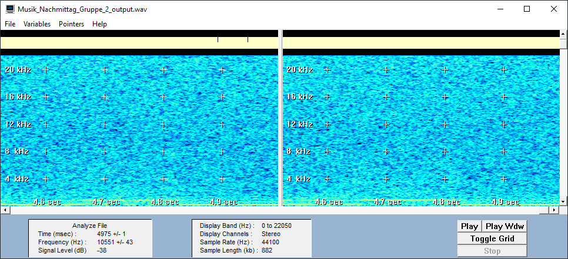
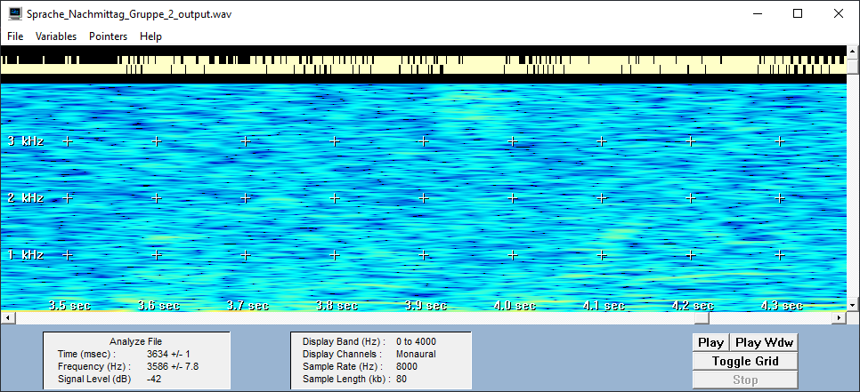
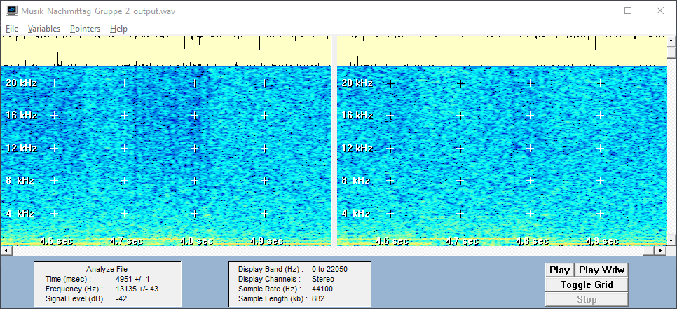
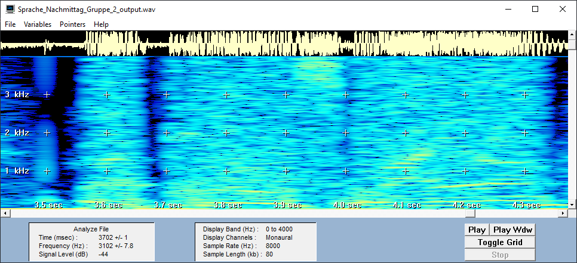

Schneide aus den dir zugeschickten Audio-Files ab dem Zeitpunkt jeweils ein Stück mit der Länge 5 Sekunden und speichere dieses als WAV-Datei ab. Parameter für Musik: fa=44,1 kHz, stereo, für Sprache: fa=8 kHz mono, beide 16 bit Auflösung. Beim Schneiden achtest du darauf, dass der Schnitt am Beginn einer musikalischen Figur bzw. eines Satzes liegt.
Musikaufnahme
Sprachaufnahme
Erkläre, warum die Audio-Files unterschiedliche Abtastfrequenzen haben.
Die beiden Audio Files haben unterschiedliche Abtastfrequenzen, da man bei Musik am besten das gesamte hörbare Frequenzspektrum übertragen möchte und bei Sprache geht es mehr um die Verständlichkeit und daher reicht ein ausgewähltes Frequenzspektrum, in dem sich die Stimme befindet. Der für Menschen hörbare Frequenzbereich liegt zwischen 20Hz und 20.000Hz. Da die Abtastung laut Theorem mindestens das Doppelte betragen sollte, liegt diese bei Musik also bei 44.100Hz. Die menschliche Stimme bewegt sich hingegen in einem Spektrum von knapp 4000Hz und damit reicht eine Abtastrate von 8000Hz bei Sprachaudios.
Lies die Musik- und die Sprachdatei mit wave_io ein und erkläre die Angaben im Header!
Headerausgaben - Sprachdatei
| Name | Anzahl | Erklärung |
|---|---|---|
| Channels | 1 | Die Anzahl der Channels sagt aus, ob sich die Datei im mono Format (1 Channel) oder im Stereo Format (2 Channels) befindet. |
| Frames | 40469 | Frames gibt die Gesamtanzahl der Abtastpunkte für die Audiodatei an. Die Zahl ergibt sich aus: SampleRate * AudioDuration. |
| Sample rate | 8000 Hz | Die Sample Rate ist die Abtastfrequenz, also wie häufig in der Sekunde der Audio-Pegel erfasst und gespeichert wird. (In diesem Fall 8000x pro Sekunde) |
| Valid bits | 16 | Die Anzahl der Bits gibt an, wie viel Speicher pro Samplewert genutzt werden soll und beeinflusst somit die Auflösung. Je mehr Speicher zugeordnet wird, desto genauer und natürlicher klingt das digitalisierte Audiosignal. Bei 16 Bit werden bspw. 216 (65.536) Werte einem Sample zugeordnet. Bei 24 Bit sind es dann schon 224 (16.777.216) Werte pro Sample. |
| Bytes per sample | 2 | Die Zahl lässt sich auf die Bittiefe zurückführen, da 8 Bit = 1 Byte entsprechen. |
Headerausgaben - Musikdatei
| Name | Anzahl | Erklärung |
|---|---|---|
| Channels | 2 | 2 Channels, da Stereo |
| Frames | 220630 | Deutlich mehr Frames, da deutlich höhere Sample Rate |
| Sample rate | 44100 Hz | Typische Sample Rate für Musik |
| Valid bits | 16 | |
| Bytes per sample | 2 | Die Zahl lässt sich auf die Bittiefe zurückführen, da 8 Bit = 1 Byte entsprechen. |
Berechne die Bitrate für die beiden Dateien!
Bitrate = Anzahl der Channels x Samplerate x Anzahl der Bits
Bitrate für die Sprachdatei: 1 * 16 * 8000 = 128 kBit/s
Bitrate für die Musikdatei: 2 * 16 * 44100 = 1411,2 kBit/s ~ 1,4 Mbit/s
Modifiziere wave_io dahingehend, dass die Sample in der WAV-Datei in eine (lesbare) ASCII-Datei geschrieben werden. Lies die von mir geschickten Sinusdateien (Sampling-Frequenz: 16 kHz) ein und bestimme aus den resultierenden Zahlenfolgen in der ASCII-Datei die Frequenz der Sinus- Schwingungen. Begründe!
sine_hi01
Werte für eine Periode: 12665 7723 -15679 -1606 (16305)
Man zählt die Anzahl der Intervalle bis sich diese wieder wiederholen. Dann teilen wir diese Anzahl durch die Anzahl der Perioden während dieses Zeitraums. Bei der sine_hi01 Datei, braucht es 32 Intervalle bis sich die Werte wiederholen. In diesem Zeitraum beinhaltet das Signal 9 Perioden. Wir können also die Menge der Intervalle für eine Periode mit 32/9 = 3,555 bestimmen.
Wenn wir diesen Wert nun mit der uns bekannten Abtastfrequenz von 16.000 Hz teilen, erhalten wir die Frequenz des Signals:
16.000/3,555 = 4.500 Hz
Die Schätzung für die Frequenz beläuft sich somit auf 4.500 Hz
sine_lo05
Werte für eine Periode: 3196 9102 13623 16069 16069 13623 9102 3196 -3196 -9102 -13623 -16069 -16069 -13623 -9102 -3196 3196
Bei der sine_lo Datei gibt es nur eine Periode während des Zeitraums, bis sich die Werte wiederholen und somit kann direkt die Anzahl der Intervalle durch die Abtastfrequenz gerechnet werden:
16.000/16 = 1000 Hz
Die Tonfrequenz beträgt also 1000 Hz, was GRAM bestätigt
Überprüfe deine Schätzung mit dem Spektralanalyse-Tool GRAM. (Vorgehensweise: Menüpunkt Analyze File, Einstellungen: Freq Scale: Linear, FFT Size: 512, Time scale: 1 msec)
sine_hi01
sine_lo05
Bei der zeitlichen Diskretisierung eines Analogsignals muss das sogenannte Abtasttheorem eingehalten werden. Wie lautet es und wie lässt sich der Grenzfall, für den es gerade noch gilt, illustrieren? Erstelle hierzu eine Zeichnung und erläutere.
Grenzfall wäre, dass die Abtastperiode halb so groß ist wie die Periodendauer der Schwingung, es gäbe also 2 Abtastpunkte pro Periode.
Also Ta = T0/2 => im frequenzbereich wäre der Grenzfall also: fa = 2 * f0
Das Abtasttheorem sagt jetzt, dass die Abtastfrequenz größer als das doppelte der größten Frequenz sein muss.
Es gilt: fa > 2 * f0max
Bei herkömmlichen Soundkarten tritt systembedingt kein Aliasing auf, weil das Audiosignal stets geeignet vorbehandelt wird. Wie sieht diese Vorbehandlung aus?
Das Signal wird mit einem Tiefpassfilter bearbeitet. Das bedeutet, dass alle Frequenzen die größer als f0max/2 sind abgedämpft werden auf dieses Limit.
Mit einem kleinen Trick lässt sich Aliasing jedoch nachweisen. Diese auch als Down-Sampling bekannte Methode besteht darin, dass man bei einer WAV-Datei z.B. jeden zweiten Abtastwert wegwirft. Man erhält so eine Wellenform, die genau die Hälfte der ursprünglichen Abtastfrequenz aufweist. Wenn man das Signal nicht vorher bandbegrenzt hat, können Aliasing-Verzerrungen hörbar werden.
Modifiziere wave_io dahingehend, dass vom eingelesenen Audiosignal jeder zweite Abtastwert verworfen wird und das resultierende Signal abgespeichert wird. Der Header muss natürlich entsprechend verändert werden!
for (int i=0; i < samples / 2;i++) {
readWavFile.sound[i] = readWavFile.sound[i*2];
}
sampleRate /= 2;
numFrames /= 2;
Wende das erstellte Programm auf die von mir geschickten Sinusdateien an (sine_hiXX.wav und sine_loXX.wav) an. Welche Frequenzen erscheinen nach dem Down-Sampling? Was würde passieren, wenn man geeignet bandbegrenzen würde?
sine_lo05 bearbeitet
sine_hi01 bearbeitet
Bei der sine_hi01 Datei tritt Aliasing auf, weil dort das Theorem verletzt wird.
- Der Ursprungston der Datei liegt bei 4500 Hz
- Wenn die sample frequenz von 16000 Hz auf 8000 Hz halbiert wird, wird das Theorem nicht mehr eingehalten, weil 4500 Hz x 2 > 8000 Hz
- Bei der sine_lo05 Datei bleibt der Ton gleich, da dort das Abtasttheorem nicht verletzt wird. -> denn: 1000hz x 2 < 8000hz
GRAM Ansicht - sine_hi01 bearbeitete Datei
wenn man das Signal geeignet bandbegrenzen würde, würde bspw. ein bandpassfilter dafür sorgen, dass alle Frequenzen außerhalb eines gewünschten Bereiches "eliminiert" werden.
da wir mit einer sample rate von 8000hz abtasten und die maximale signalfrequenz der sine_hi datei bei 4500hz liegt und damit eine Abtastung von mindestens 9000hz benötigen würde, müsste man die maximale Signalfrequenz der Audio Datei auf 4000hz setzen. dadurch würde das Abtasttheorem eingehalten werden und der Aliasing Effekt würde nicht mehr auftreten.
Nun wende das Downsampling auf deine Sprachdatei an und beschreibe, wie sich der Klang verändert. Erkläre, warum das passiert!
Der Gesamtklang der Audio wird deutlich dumpfer und die Stimme ist immer schlechter zu verstehen. Die Datei wird jetzt nur noch mit einer Frequenz von 4000hz abgetastet, was bedeutet, dass das abgetastete Frequenzspektrum nur 2000hz umfasst. Daraus resultiert, dass viele Frequenzen, die für eine wohlklingende Stimme sorgen würden, nicht vorhanden sind.
Die herkömmlichen PC-Soundkarten arbeiten meist entweder mit 16 oder 8 bit-Auflösung. Wie groß ist die Anzahl bei diesen beiden Werten darstellbaren Amplitudenwerten?
Amplitudenwert für 16 bit-Auflösung: 216 = 65.536
Amplitudenwert für 16 bit-Auflösung 28 = 256
Modifiziere wave_io dahingehend, dass die Bitanzah reduziert wird. Dazu werden alle Samples durch eine Potenz von 2 geteilt (Integer-Division ohne Rest). Damit das resultierende Signal nicht leiser wird als das Original, wird die Operation durch Multiplikation mit derselben 2er Potenz kompensiert. Zu beachten: Der Datentyp hat nach wie vor 16 bit!
int reduced_bits = 1;
for (int i=0; i < samples; i++) {
readWavFile.sound[i] /= Math.pow(2, reduced_bits);
readWavFile.sound[i] *= Math.pow(2, reduced_bits);
}
Mit dem entstandenen Programm sollen nun die in Aufgabe 1 erzeugten Wave-Dateien (Sprache und Musik) bitreduziert werden. Ab welcher Bitanzahl tritt eine hörbare, also deutliche Verschlechterung der Qualität ein? Bei wie viel Bit ist das Sprachsignal noch verständlich?
Um 10 bits reduzierte Musikdatei (6 bits verbleibend)
Um 10 bits reduzierte Sprachdatei (6 bits verbleibend)
Musikdatei
Im Original der Musikdatei gehen die Spektrogramm Striche in den Bilder nur bis 8kHz und die einzelnen Tonanschläge sind auch visuell deutlich zu sehen (2 Anschläge ca. 4,65sec und 4,81sec). Das Rauschen in der 6 Bit Datei ist ebenfalls sehr gut zu sehen im Spektrogramm. Die dargestellten Frequenzen erstrecken sich über das gesamte Frequenzspektrum (0-20kHz). Und auch die zuvor sauber dargestellten Frequenzlinien sind teilweise abgehackter und mit neuen Linien überlagert. Generell ist das Spektrogramm der verrauschten Datei "voller".
Original Musikdatei (16-bits)
Bitreduzierte Musikdatei (6-bits)
Sprachdatei
In der Sprachdatei ist das Rauschen nicht ganz so deutlich visualisiert wie in der Musikdatei. Hier fällt es dadurch auf, dass die Frequenzbänder auf der Zeitachse ein wenig "ausfransen" und ähnlich wie in der Musikdatei auf dem gesamten Spektrum extra Frequnzen hinzukommen. Bei der Sprache fällt allerdings deutlicher als bei der Musik auf, wie teilweise Informationen abgeschnitten bzw. gelöscht wurden (z.B. bei 3,5sec und 3,7sec). Dort fehlen aufeinmal Frequenzen und das ist auch in der Audio Datei zu hören, denn die Sprache ist in der reduzierten Datei ein wenig abhackter.
Original Sprachdatei (16-bits)
Bitreduzierte Sprachdatei (6-bits)
Was charakterisiert das entstehende Quantisierungsgeräusch bei der Bitreduzierung und macht es besonders störend?
Signifikant für das Quantisierungsgeräusch ist das zunehmende Rauschen, welches zunehmend stärker wird. Der Sound verschlechtert sich ebenfalls & beginnt abgehackt zu klingen, bis nur noch ein einziges Störgeräusch hörbar ist.
Modifiziere dein Programm noch einmal so, dass auch das Differenzsignal zwischen Original und bitreduziertem Signal, d.h. der Quantisierungsfehler ausgegeben werden kann. Dabei musst du bedenken, dass z.B. bei der 1 Bit Reduzierung das Quantisierungsrauschen nur von -1 bis +1 verlaufen würde. Dieser Wertebereich wäre viel zu klein, als dass man das Rauschen beim Abspielen als 16bit-Wert noch hören könnte. Daher muss das Rauschen durch Multiplikation mit einer 2er Potenz verstärkt werden. In anderen Worten: Hat man vorher durch 2^n geteilt, sollte man das Differenzsignal vor dem Abspeichern mit 2^(16-n-1) multiplizieren. So ist sichergestellt, dass der Verstärkungsfaktor mit der Anzahl der gelöschten Bits kleiner wird.
short[] original = new short[samples];
for (int i=0; i < samples;i++) {
original[i] = readWavFile.sound[i]; // original sound merken
readWavFile.sound[i] /= Math.pow(2, reduced_bits); // bits löschen
readWavFile.sound[i] *= Math.pow(2, reduced_bits); // Lautstärkeverlust ausgleichen
readWavFile.sound[i] -= original[i]; // den Unterschied im sound array abspeichern
readWavFile.sound[i] *= Math.pow(2, (16 - reduced_bits - 1)); // Fehler verstärken
}
1 bit reduzierte Musikdatei
1 bit reduzierte Musikdatei
1 bit reduzierte Sprachdatei
1 bit reduzierte Sprachdatei
In den Differenzdateien, die um 1 Bit reduziert wurden ist vordergründig hauptsächlich ein durchgängiges Rauschen zu hören und nur im Hintergrund kann man leicht die Stimme bzw. die Musik erkennen.
10 bit reduzierte Musikdatei
10 bit reduzierte Musikdatei
10 bit reduzierte Sprachdatei
10 bit reduzierte Sprachdatei
Um je mehr Bit man die Differenzdateien reduziert, desto mehr ähneln sie dem Original (bis sie bei 15 reduzierten Bits wieder dem Original entsprechen). Bei der Musik ist das etwas schlechter zu erkennen als bei der Sprache. Man sieht nur, dass die Ausschläge im gelben Balken ganz oben etwas mehr differenzieren und nicht mehr nur ein "gelber Strich" durchläuft wie in der um 1 Bit reduzierten Datei. In der Tabelle kann man maximal ein paar dunkler gefärbte Bereiche und dadurch ganz wenig mehr Struktur erkennen aber durch das immer noch recht starke Rauschen ist das Spektrogramm im gesamten Frequenzbereich ausgefüllt. In der Sprachdatei kann man bei zunehmender Bitzahl auch wieder die Sprechpausen, die der Sprecher lässt erkennen. Dadurch bekommt sie deutlich mehr Struktur als die Musikdatei und sie ist nicht mehr durchgängig verrauscht.
Welchen Charakter hat das Rauschen bei einer Reduktion um 1bit und wie verändert es sich bei zunehmender Bit-Reduktion?
Bei einer Reduktion um 1 Bit hört man in der Differenzdatei ein lautes, recht hohes und gleichmäßiges Rauschen,
was die Musik komplett überlagert.
Das klingt bei den nächsten reduzierten Bits auch weitestgehend gleich, aber ab
spätestens 7 reduzierten Bits klingt das Rauschen hörbar tiefer und wird langsam etwas mehr von der Musik durchsetzt.
Generell ist die Musik ein wenig besser zu verstehen, aber das Rauschen klingt immer noch sehr laut und unangenehm.
Ab 11 reduzierten Bits ist es kein durchgängiges Rauschen mehr, sondern eher eine starke Verzerrung die auf jedem
(in diesem Fall) Harfenanschlag liegt.
Ab 13 reduzierten Bits klingt die Datei nahezu wie das Original, nur noch mit vereinzeltem leisen knacken/knistern
im Sound, ähnlich wie bei einer etwas abgespielten LP. Und schließlich bei 15 reduzierten Bits hat man wieder den
Originalsound, da die Fehlerverstärkung keinen Einfluss mehr auf den Sound hat (2 ^ (16 - 15 - 1) = 0).
Bei der Sprachdatei verhält es sich recht ähnlich. Die Differenzdatei klingt immer mehr wie das Original je mehr Bits man reduziert. Nur im Gegensatz zur Musikdatei verschwindet das durchgängige Rauschen schon bei ca. 9 reduzierten Bits und die Sprechpausen werden ruhiger und deutlich erkennbar. Die Stimme verzerrt mit zunehmend reduzierten Bits immer weniger bis die Differenzdatei bei 15 reduzierten Bits wieder normal klingt.